Elementos técnicos.
Cuando diseñas un baño es importante conocer todos los aspectos técnicos que la instalación requerirá en función de las opciones que se integren: cisternas empotradas, sumideros, sifones, grifería electrónica, telas asfálticas, etc.
Ponemos a tu disposición una amplia selección de elementos técnicos de las principales marcas nacionales e internacionales como las que te mostramos a continuación.
Ven a verlos a nuestra tienda de Barcelona y únete a nuestras redes sociales, blog o newsletter, para estar al día de novedades, alguna de las cuáles te mostramos a continuación.
Si necesitas recambios para tu cuarto de baño, también puedes consultarnos lo que buscas.
Y si lo que buscas no está en exposición, lo buscamos en la Bagnoteca, nuestra biblioteca de catálogos.
Novedades 202639
 Elementos técnicos
Elementos técnicosAsiento de wc ReSeat – Ceramica Cielo
ReSeat es el nuevo asiento de inodoro de Rexa Design con opciones de tonalidad “en todo masa”, lo que incrementa su resistencia al desgaste y asegura una estética uniforme con el paso del tiempo.
Ofrece alta resistencia mecánica, tolerancia a golpes y estabilidad frente a agentes químicos, prestaciones clave para proyectos de uso intensivo hotelero-contract.
Compatible con la línea Enjoy Pro, es una opción responsable con el medio ambiente gracias al material con el que ha sido fabricado.

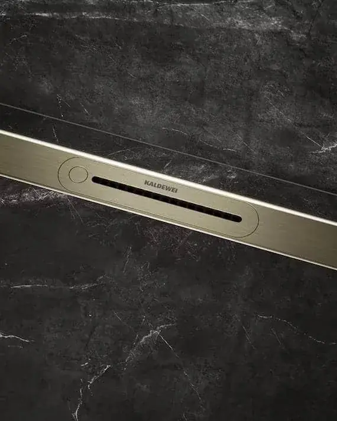
Elementos técnicosCanal de ducha FLOW - Kaldewei
El canal de ducha Kaldewei FLOW combina diseño minimalista, funcionalidad y durabilidad. Fabricado en acero inoxidable, asegura una evacuación rápida gracias a su ligera pendiente y facilita la limpieza con el sistema Click’n Clean. Ofrece instalación flexible, longitudes adaptables y sistemas FlowDrain eficaces con sifón extraíble.
Su versión Flowline HeatrecoveryY recupera calor del agua usada para ahorrar energía. Disponible en acabados modernos, FLOW es una solución premium que aporta estética, confort y eficiencia a baños contemporáneos.

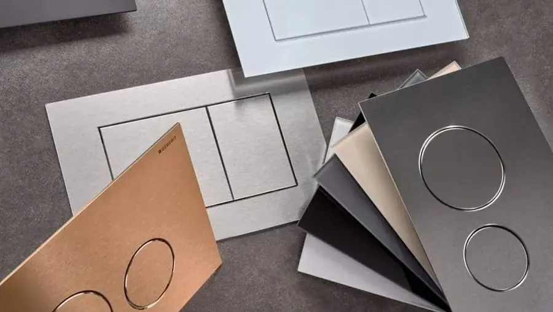
Elementos técnicosPulsador para cisterna Geberit Sigma40
Pulsador ultra delgado (4 mm) para cisternas empotradas, disponible en formatos redondo, cuadrado y panorámico.
Combina diseño minimalista y materiales de alto rendimiento para una estética contemporánea y duradera en más de 10 acabados (acero inoxidable cepillado, vidrio y opciones con recubrimiento de color).
Sus versiones coordinadas para inodoro y urinario permiten mantener una estética uniforme en todo tipo de proyectos.
Su mecanismo de precisión asegura una descarga eficiente y fiable, cumpliendo con los estándares más exigentes.
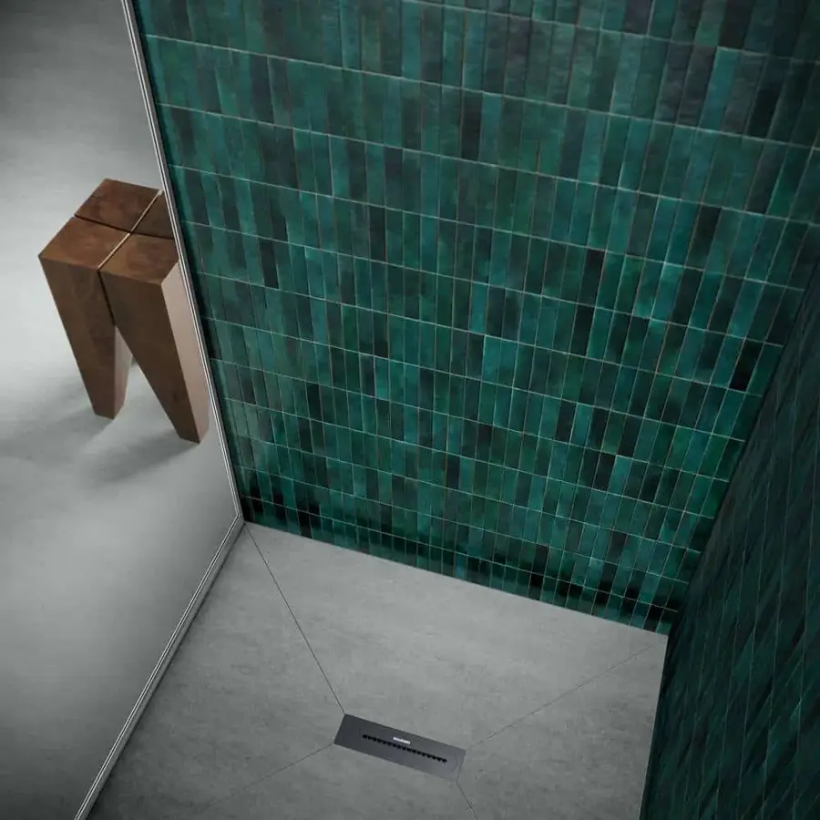
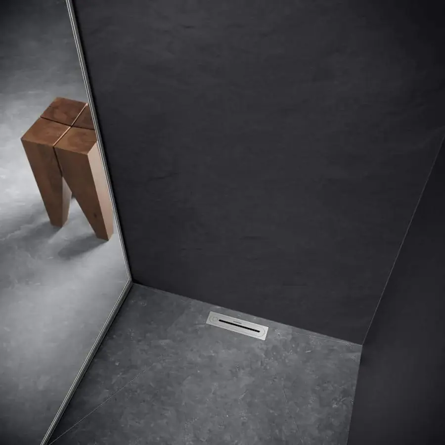
Elementos técnicosDesagües de ducha FlowPoint Zero – Kaldewei
Sumidero de ducha en acero inoxidable macizo con embellecedor disponible en cinco acabados (acero cepillado, champán, grafito, negro mate y blanco alpino).
Con altura reducida y colocación flexible al ras de suelo, su kit “todo en uno” simplifica la instalación, garantiza el sellado e insonorización.
Su innovador sistema K Click’n Clean® permite optimizar al máximo la limpieza de una forma sencilla y con bajo mantenimiento.
Fabricado con materiales 100 % reciclables, combina durabilidad y practicidad, ideal para uso diario.
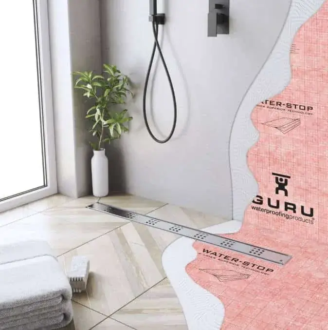
Elementos técnicosLámina impermeabilizante WATER-STOP – Estil Guru
Membrana impermeable multicapa de mínimo espesor, su innovador concepto es compatible con una instalación bajo revestimientos cerámicos en suelos y paredes.
Flexible, ligera y fácil de instalar sin maquinaria especializada, permite impermeabilizar sobre pavimentos existentes sin aumentar altura, ideal para reformas sin modificar cotas.
Su composición fibrosa y elástica asegura adherencia directa y actúa como puente de fisuras tanto en interiores como en exteriores.
Una opción disponible en rollos de varios tamaños, resistente, duradera y versátil, perfecta para proyectos en baños, terrazas, duchas, piscinas.
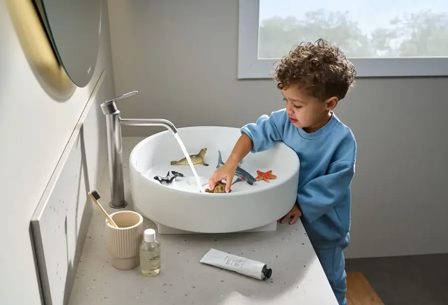
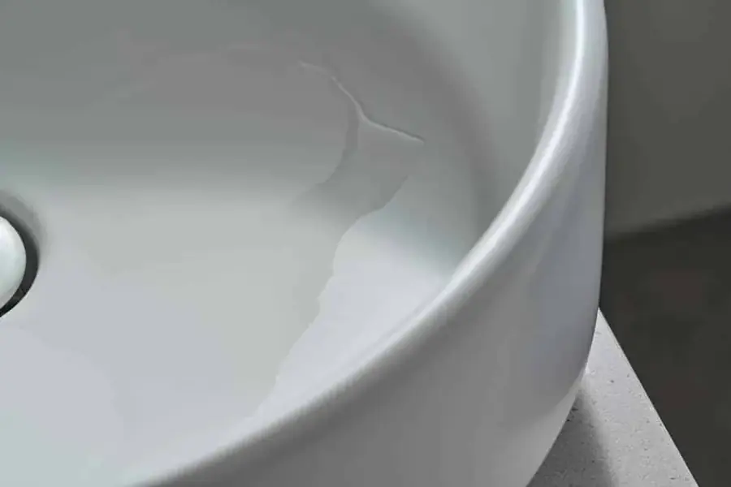
Elementos técnicosVitrificado protector DuraShield -Duravit
Nuevo vitrificado protector cerámico DuraShield®: higiene avanzada y mantenimiento sencillo para espacios exigentes.
Diseñado para proyectos donde la salud, la limpieza y el diseño deben convivir sin concesiones. Baños en los que la seguridad y el confort van de la mano.
Su superficie lisa y prácticamente sin poros reduce la adherencia de cal y suciedad, optimizando la limpieza diaria.
Gracias a su avanzada tecnología antibacteriana con iones metálicos, neutraliza hasta el 99,99 % de bacterias en solo 24 horas.
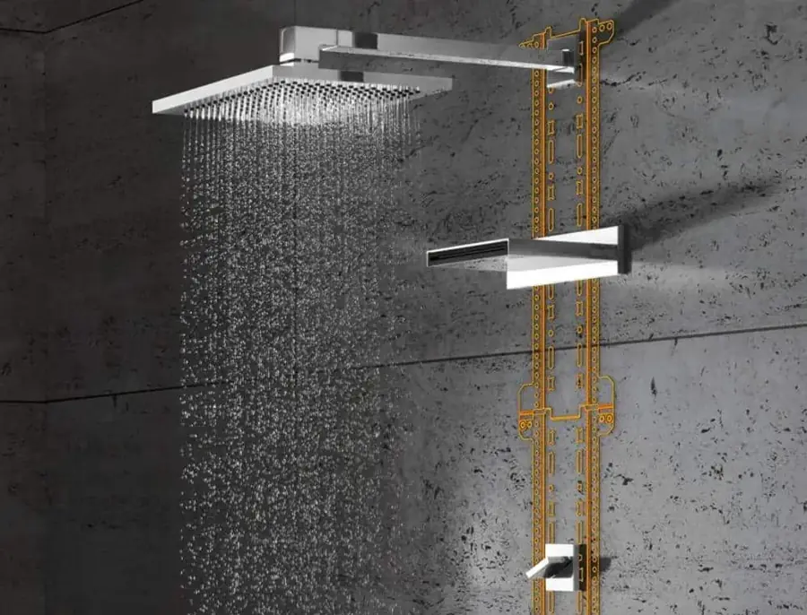
Elementos técnicosPre montaje para duchas y bañeras xGRID – Dornbracht
El sistema empotrado xGRID de Dornbracht redefine el pre montaje de duchas y bañeras, ofreciendo precisión y flexibilidad incluso en instalaciones complejas. Gracias a su innovador sistema de guías xGRID, todos los elementos ocultos se alinean perfectamente tanto en sentido horizontal como vertical.
Su diseño permite compensar profundidad y longitud, adaptándose a distintos sistemas de bastidor y garantizando compatibilidad total. xGRID facilita el montaje y optimiza la planificación, asegurando una instalación impecable y un resultado estético de máxima calidad en cualquier espacio de baño.
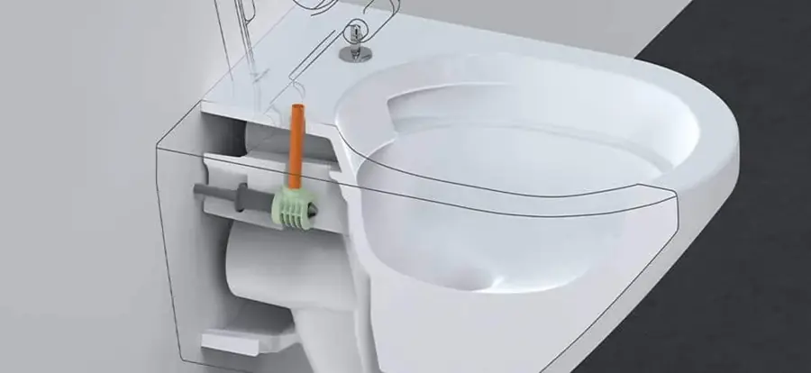
Elementos técnicosSistema ViFix para inodoros suspendidos – Villeroy&Boch
El innovador sistema ViFix de Villeroy&Boch es la nueva solución del mercado para instalaciones de inodoros suspendidos con dificultad de acceso lateral. Con este modelo, el montaje se convierte en un proceso rápido y sencillo.
Su diseño permite fijar la pieza desde arriba a través de los orificios del asiento, con un anclaje invisible por la parte posterior que garantiza una estética limpia y elegante, facilitando la instalación sin comprometer la armonía visual del baño.
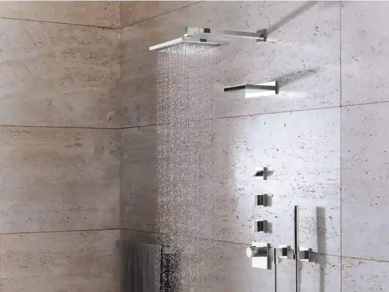
Elementos técnicosTermostatos empotrados xTOOL para griferia de ducha - Dornbracht
Dornbracht ofrece su nueva propuesta de termostatos empotrados xTOOL. Una línea exclusiva especial para baños que buscan una instalación mínima, rápida y confortable.
La colección combina con un sistema de guías propio de la marca, xGRID, asegurando un encaje perfecto y un montaje sencillo. Ideales para tantos puntos de salida como sea necesario, xTOOL está pensada para satisfacer las exigencias de espacio más altas, sin renunciar al estilo de sus piezas con un diseño icónico y atemporal.
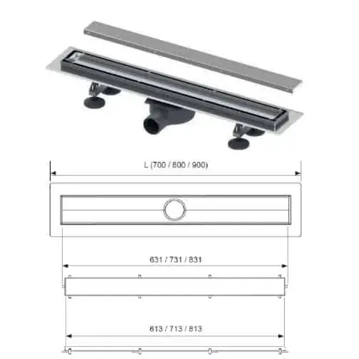
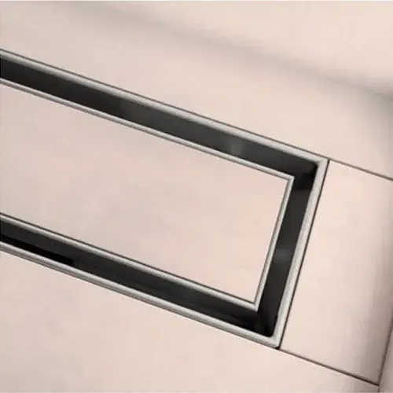
Elementos técnicosCanaleta de ducha TECElinus “2 en 1”
La canaleta de ducha TECElinus “2 en 1” ofrece una solución completa para baños modernos. Compuesta por un cuerpo de canaleta con brida adhesiva, el sumidero con salida orientable, los pies de montaje ajustables a una altura de hasta 125mm y rejilla de salida reversible, con embellecedor en acero inoxidable.
Con una capacidad de drenaje de 0,8 l/s y resistencia de carga de 300 kg, asegura durabilidad y eficiencia, adaptándose a diferentes alturas y configuraciones de baño.
- Elementos técnicos
Descarga de inodoro Twistflush[e³] – Villeroy Boch
Villeroy & Boch lanzan al mercado una revolución en inodoros con su nuevo TwistFlush[e³], una pieza inigualable que incorpora la tecnología de descarga más avanzada: el aclarado por vórtice, que no deja residuos.
Este inodoro se posiciona como una de las mejores opciones en relación calidad-precio, tanto para viviendas privadas como para comercios y todo tipo de construcciones. Su diseño sin bordes y su exclusiva tecnología garantizan un aclarado óptimo con un bajo consumo de agua, además de facilitar el mantenimiento y la higiene diaria.
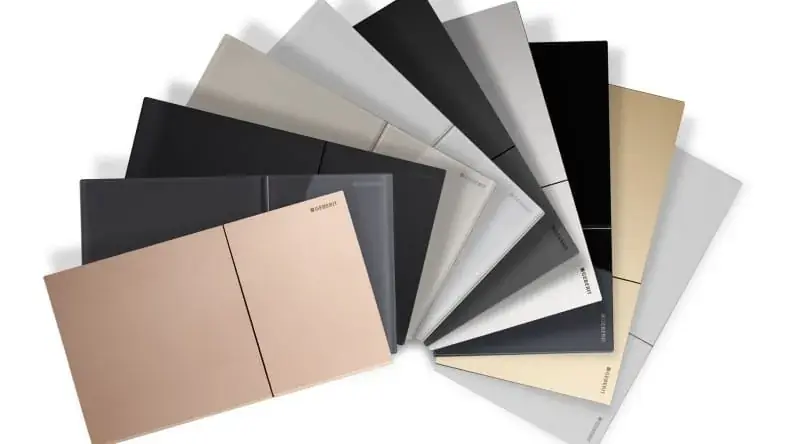
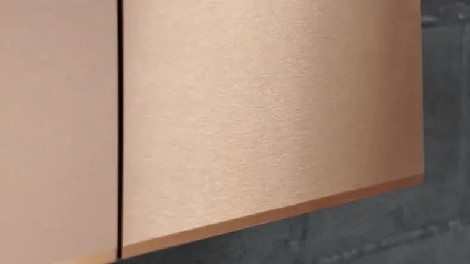
Elementos técnicosPulsador para cisterna SIGMA70 - Geberit
Experimente la innovación en diseño y funcionalidad con los pulsadores para cisternas Geberit, un elemento esencial para personalizar su baño. La serie Sigma70 ofrece un diseño flotante y minimalista, combinando estética y precisión mecánica.
Disponible en una amplia variedad de materiales y colores elegantes, estos pulsadores no solo son visualmente impactantes, sino también altamente funcionales. Con características como doble volumen de descarga, revestimiento antihuellas fácil de limpiar, luz de orientación y eliminación de olores, los pulsadores Geberit son la elección perfecta para quienes buscan elegancia y comodidad en cada detalle del baño.
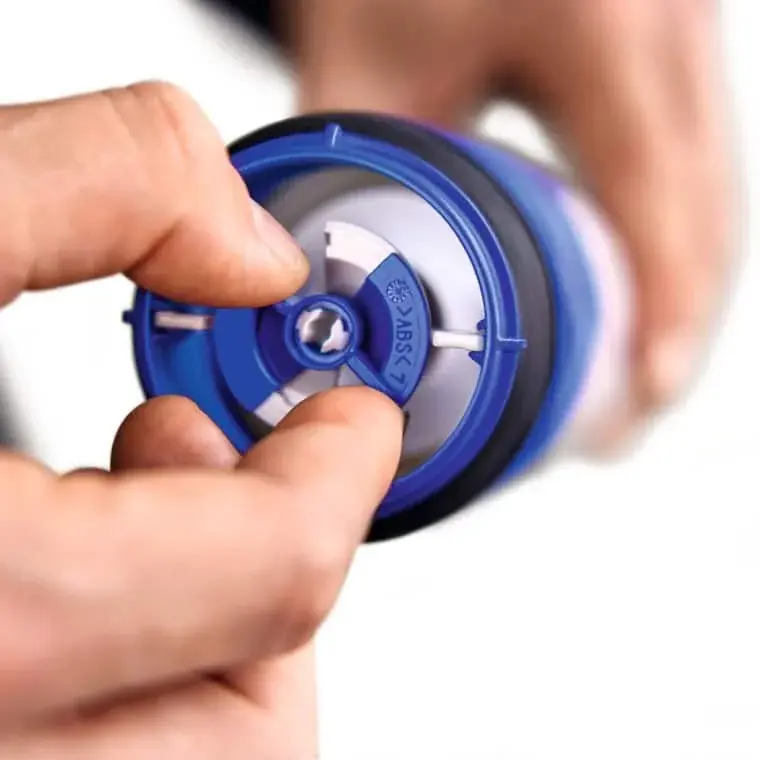
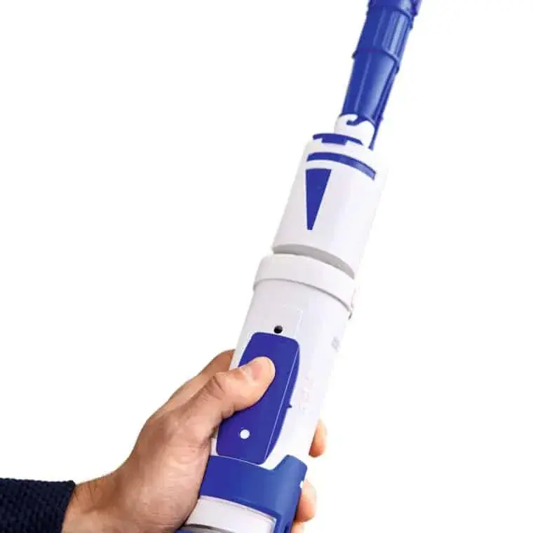
Elementos técnicosUnidad de doble descarga Tipo 208 - Geberit
Experimenta la evolución en la eficiencia del agua con el nuevo mecanismo de doble descarga de Geberit, ahora integrado en todas las cisternas empotradas Geberit Sigma y Omega.
El modelo Tipo 208 permite una flexibilidad sin precedentes, adaptando los volúmenes y velocidades de descarga según las necesidades específicas del inodoro gracias a su válvula reguladora.
Este innovador mecanismo, reduce el consumo de agua, así como el riesgo a salpicaduras, optimizando la limpieza post-uso. Además, el diseño compacto facilita la instalación y extracción rápida a través de la abertura de servicio de la cisterna. Un paso hacia la eficiencia hídrica sin compromisos.
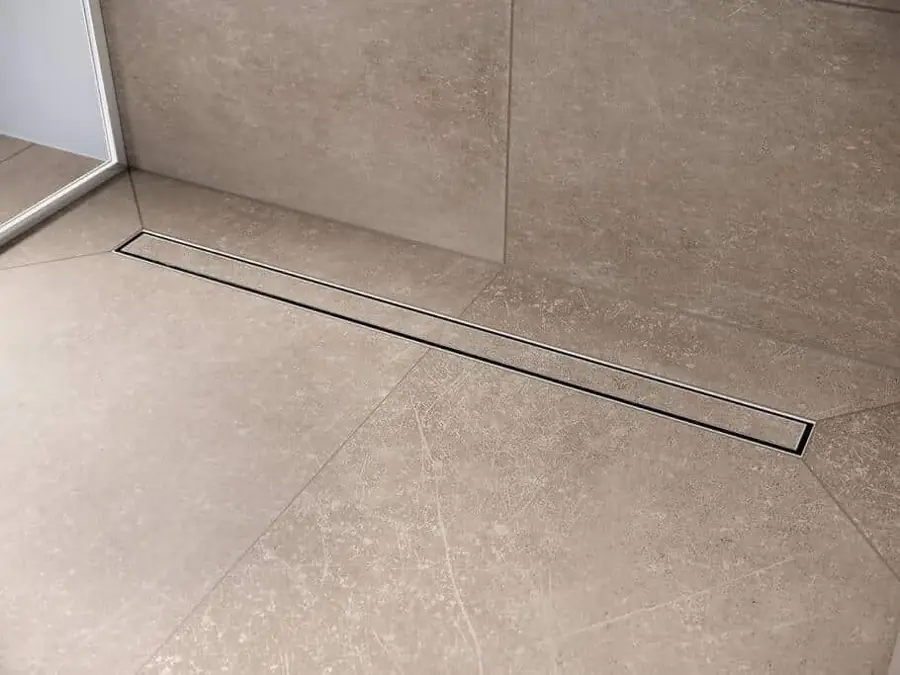
Elementos técnicosSistema de desagüe RainDrain – Hansgrohe
Descubre la perfección estética en cada gota con RainDrain. El nuevo desagüe lineal de Hansgrohe que permite personalizar tu baño a tu gusto ofreciéndote varios modelos en colores, acabados y diseños armonizados con la estética global de la estancia.
Gracias a su aspecto minimalista, la gama se camufla con el resto de elementos y mobiliario. En la misma línea, su eficiente sistema de drenaje permite un funcionamiento excelente y silencioso para una rutina de baño de máximo bienestar.
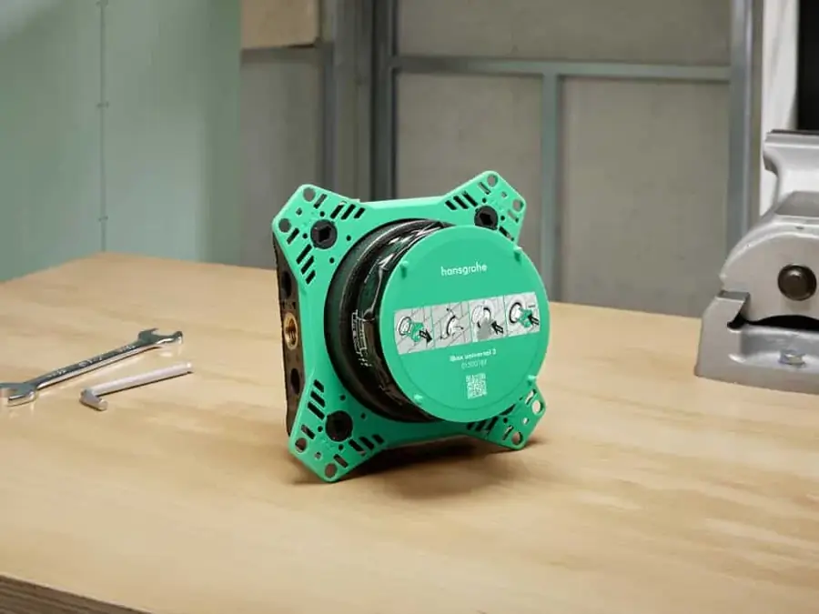
Elementos técnicosSistema de control del agua - iBox universal 2 – Hansgrohe
Hansgrohe sorprende con su nuevo modelo de sistema de control del agua “iBox universal 2”, una evolución del anterior que asegura una mayor rapidez de instalación.
Integrar un sistema como este en tu baño te asegura una experiencia de uso segura y eficaz, además de la máxima flexibilidad gracias a sus múltiples posibilidades de fijación.
Si eres de los que se preocupan por la estética, al estar empotrado, el nuevo iBox permite mantener una línea minimalista en tu baño combinando a la perfección con el resto del mobiliario y decoración.
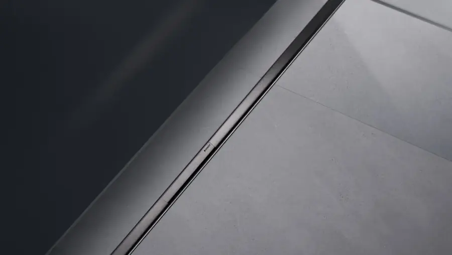
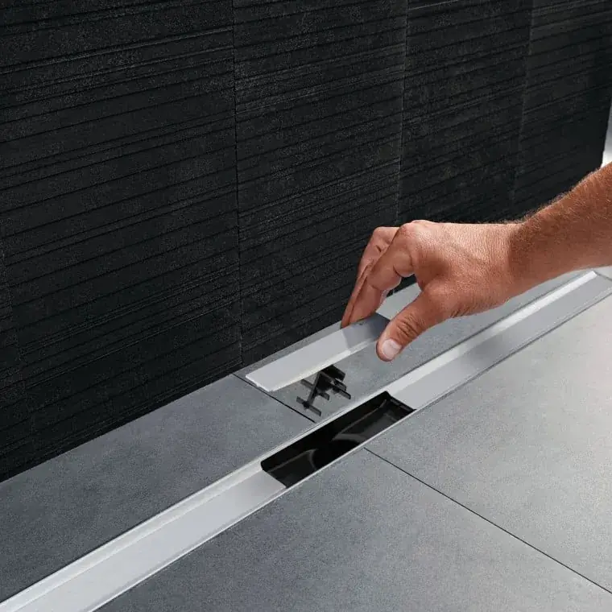
Elementos técnicosCanal para duchas Cleanline50 - Geberit
CleanLine50 es el nuevo canal para ducha de Geberit, un nuevo modelo que se suma a la colección de canales que la marca ofrece.
Caracterizado por su diseño Premium, la última novedad de Geberit incluye un canal de drenaje en pendiente permitiendo un mejor desagüe. Esta morfología facilita su instalación y asegura un sellado seguro en cualquier anchura y espacio de ducha.
CleanLine50 está fabricado con acero inoxidable disponible en versión cepillado y en cromado negro, con revestimiento antihuellas. La opción de Geberit garantiza un buen mantenimiento y limpieza del baño, incluyendo un filtro anticabello fácilmente accesible.
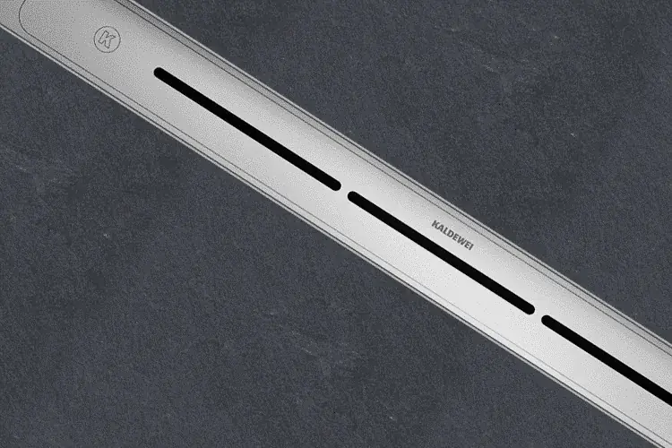
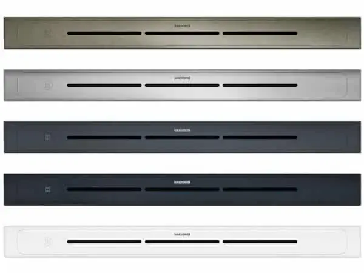
Elementos técnicosCanaletas para duchas Flowline Heatrecovery - Kaldewei
Kaldewei apuesta por su lanzamiento más consciente y presenta “Flowline Heatrecovery”, las nuevas canaletas de ducha con las que ganar en rentabilidad.
Especialmente pensadas para evitar que el calor se pierda por el desagüe, mantienen una temperatura cálida y agradable en la zona de baño.
La marca se suma a la lucha por el medio ambiente con esta nueva línea sostenible. Al mantener el calor, el gasto de agua caliente es menor garantizando el ahorro de energía y, por tanto, se reduce el impacto medioambiental.
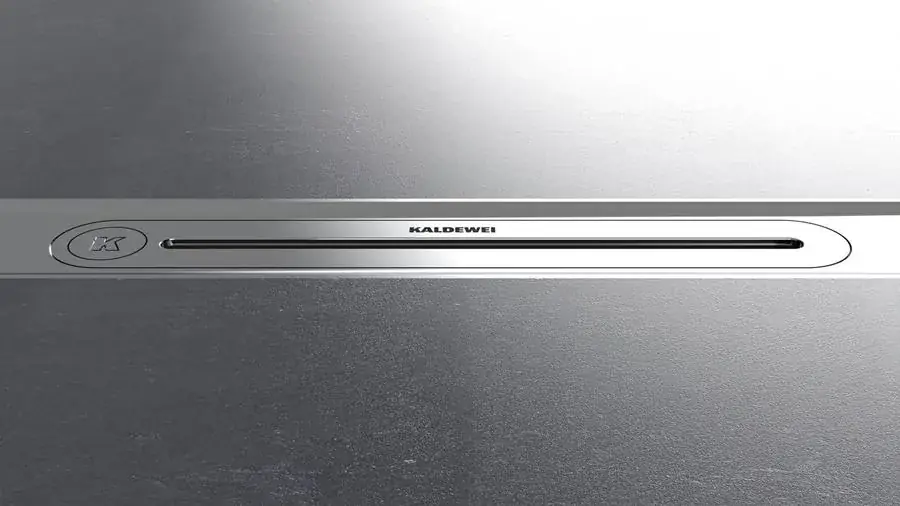
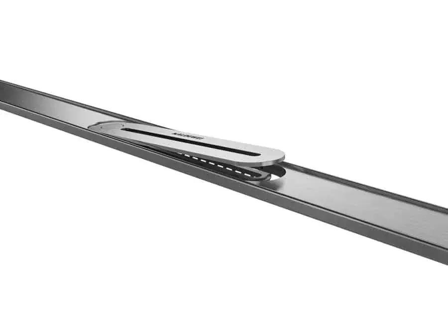
Elementos técnicosDesagüe de ducha en acero inoxidable Flowline Zero – Kaldewei
Kaldewei presenta su colección de desagües de ducha “Flowline Zero” más minimalista y elegante.
Hechas a partir de acero inoxidable, se encuentran en varias longitudes estándar. Además, los modelos pueden acortarse adaptándose 100% a las necesidades concretas del lugar donde vayan a ser colocadas.
Diseñadas para convencer, las cubiertas están disponibles en 5 tonos diferentes: acero inoxidable cepillado, champán, bronce de cañón, blanco y negro mates. De este modo, te asegura una perfecta combinación con el resto de los tonos del baño.
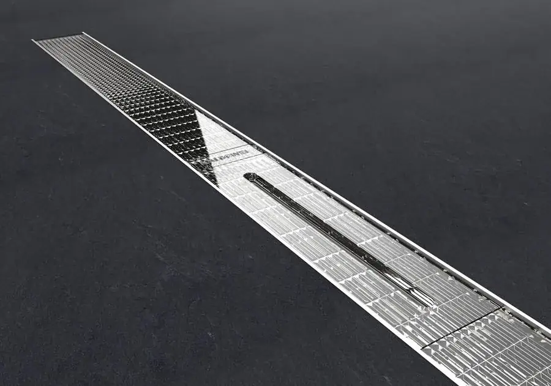
Elementos técnicosDesagüe para ducha de cristal de vidrio Flowline Crystal - Kaldewei
Kaldewei lanza su nuevo modelo “Flowline Crystal”. Una canaleta de ducha hecha con vidrio de seguridad templado.
Con su apariencia, similar a la de una joya, y su color transparente la novedad de Kaldewei se presenta como uno de sus diseños más exclusivos y destacados.
La elección de este material convierte a la pieza en una apuesta confiable para garantizar la seguridad en la ducha. Además, facilita su mantenimiento siendo una opción fácil y práctica de limpiar.
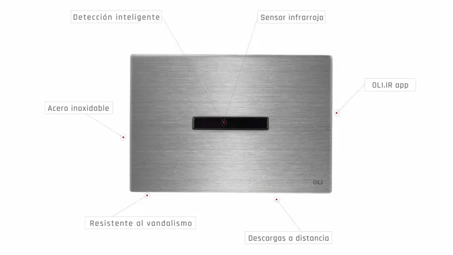
Elementos técnicosPlaca para cisternas eLine - Oli
La placa eLINE para cisternas OLI se activa mediante sensor inteligente para adaptar la descarga de agua en baños públicos. Fabricado en acero inoxidable con opciones de parametrización e integración vía app.
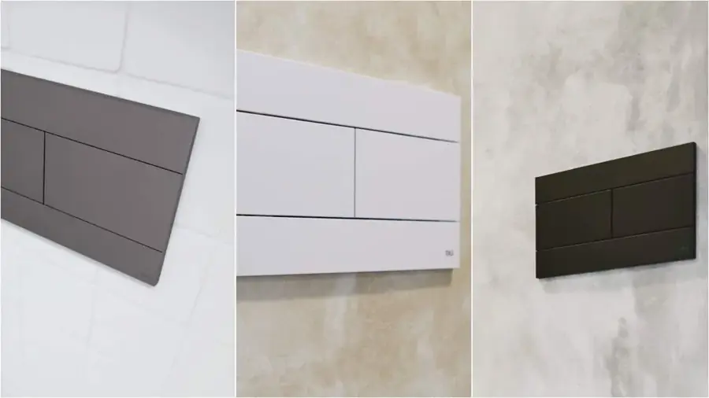
Elementos técnicosPulsador Slim - Oli
Diseño, eficiencia y seguridad en baños. Oli presenta el pulsador Slim con acabado mate en tres tonos: negro, blanco y gris. Diseño contemporáneo y minimalista que aporta elegancia a espacios de baño nuevos o renovados.
- Elementos técnicos
Tecnologia Ness® Smart water living – Métrica6
Tecnología del futuro pensada en clave sostenibilidad. MÉTRICA6 ha creado NESS®, un sistema para transportar agua caliente desde el calentador hasta la habitación, que consigue reducir a cero el desperdicio de agua, con un 100% de eficiencia.
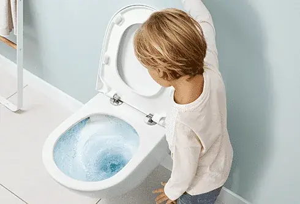
Elementos técnicosCisterna para baño Twistflush – Villeroy&Boch
Un sistema de descarga que proporciona mucha más potencia y mucho menos consumo de agua. La combinación perfecta, gracias a su remolino de agua, creado mediante las dos boquinas que incorpora, genera un efecto de succión que puede con todo.
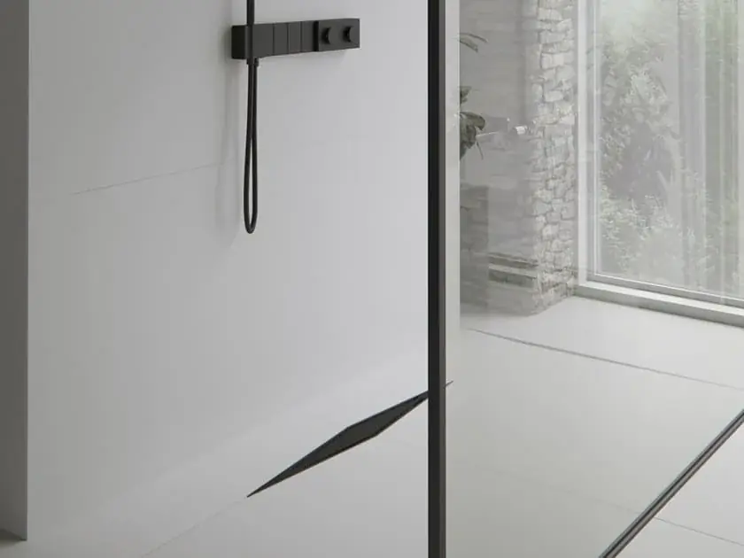
Elementos técnicosDesagüe para baño Diamond – Easy Drain
Diamond es un desagüe, fabricado por EASY DRAIN, con un diseño de lujo sin precedentes. Como su propio nombre indica, su diseño en forma de diamante lo hace una muy buena opción para todas aquellas duchas que quieran apartarse de lo convencional.
Su forma única, que solo necesita una pendiente a dos aguas, hace que sea una muy buena opción para un amplio abanico de duchas.
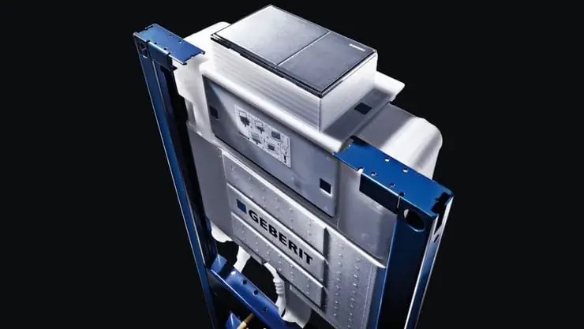
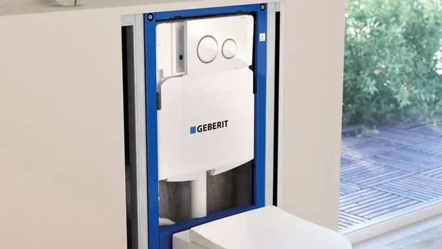
Elementos técnicosCisterna empotrada para baños Omega – Geberit
Junto a aspectos puramente funcionales y de facilidad en cuanto a su instalación, en la decisión de elegir una u otra cisterna para inodoros el tamaño de la misma es importante.
No sería la primera vez que las pequeñas dimensiones del espacio, impiden que una cisterna se coloque en servicios ubicados, por ejemplo, en el hueco de una escalera, en habitaciones con techos abuhardillados, o debajo del alféizar de una ventana.
Es por esto que Geberit presenta el modelo Omega en dos versiones la de 82 cms y la 98 cms.
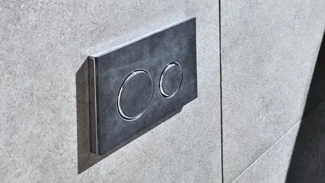
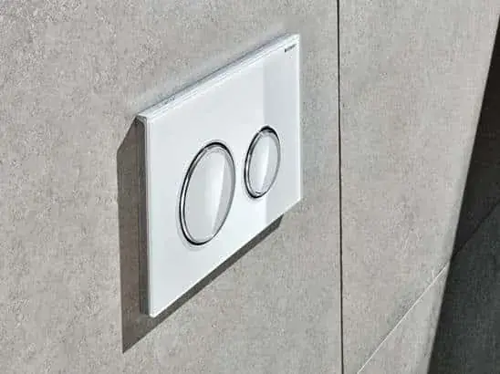
Elementos técnicosPulsador para water Sigma 21- Geberit
Tecnología avanzada, personalidad, estética sobria y moderna, junto a óptima calidad.
Así definimos el nuevo pulsador para descargar el agua de inodoros, Sigma 21 de Geberit, fabricante especializado y líder en sistemas para baños.
¿Qué más te podemos contar?
Pues que Geberit sorprende, no solo con lo compacto de este pulsador y sus mecanismos (descarga completa o media, distintas versiones, diseño ergonómico), sino también con la incorporación, por vez primera, de un material natural, la pizarra negra brasileña.
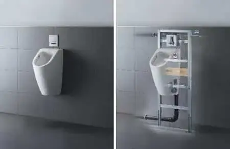
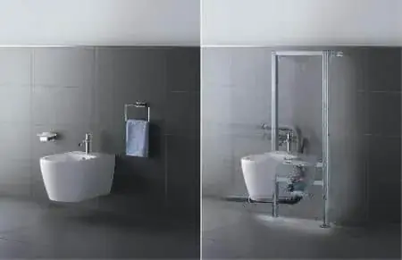
Elementos técnicosPulsadores y bastidores Durasystem – Duravit
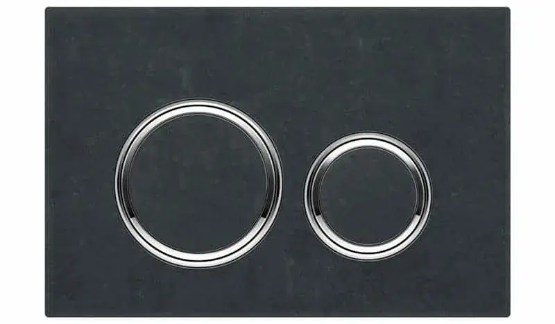
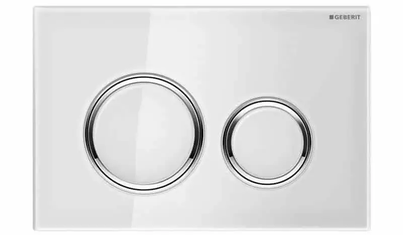
Elementos técnicosPulsadores para wc Sigma 21 – Geberit
Geberit presenta Sigma 21, nuevos pulsadores para inodoros que además de por su estética actual, destacan por las innumerables opciones de acabados, la calidad de los materiales en los que está fabricado, pizarra y vidrio entre otros, así como las opciones de personalización que ofrece.
Una perfecta solución que añadir al resto de colecciones Sigma de este pionero fabricante siempre a la cabeza de la innovación.
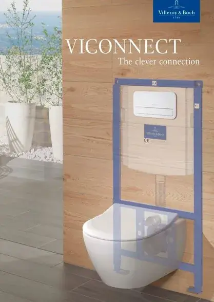
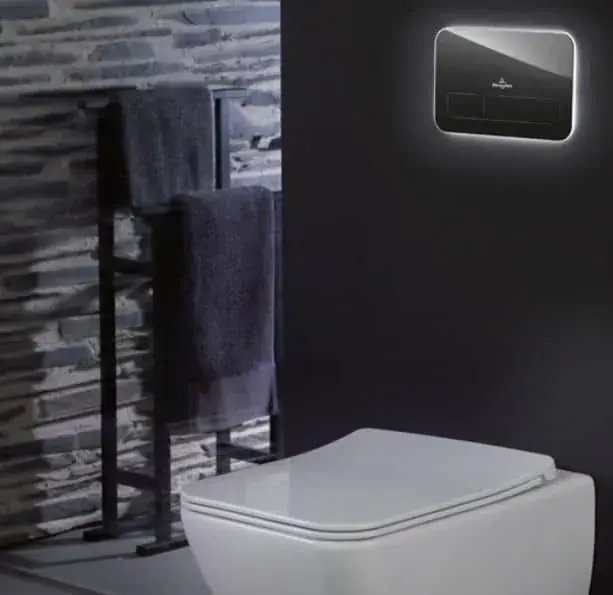
Elementos técnicosCisternas y bastidores empotrados para baño - Villeroy & Boch
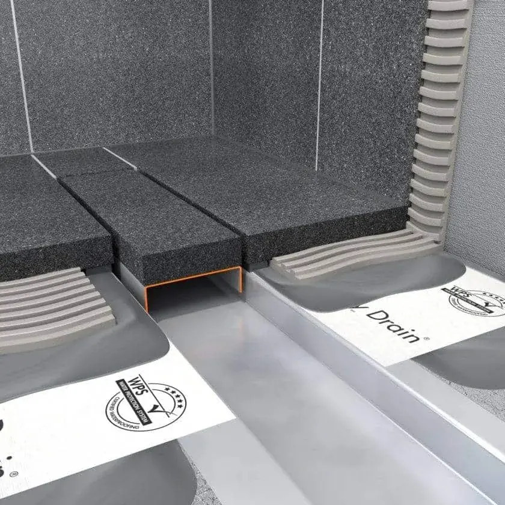
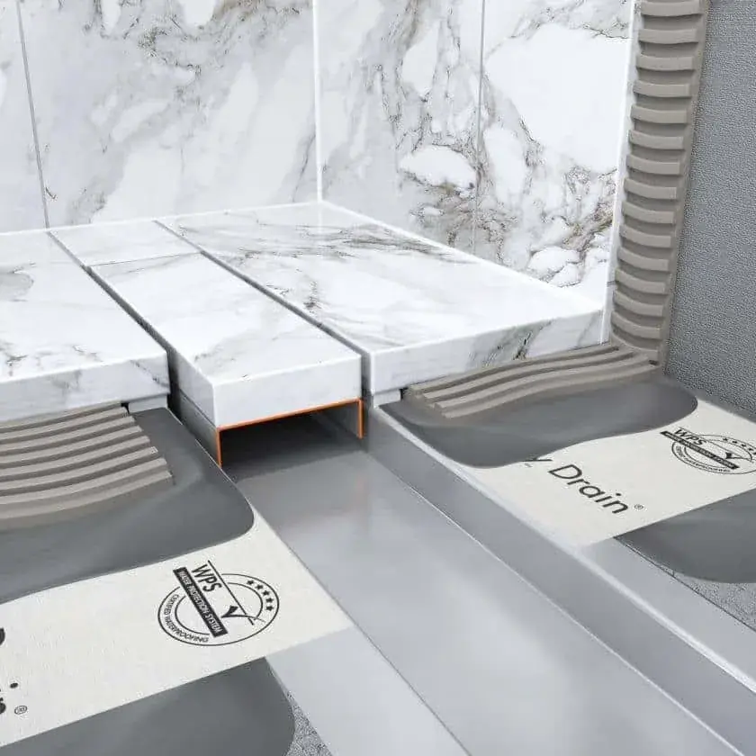
Elementos técnicosDesagües para duchas de piedra natural – Easy Drain
Si algo gusta a cualquier usuario de un baño moderno de diseño, es que el desagüe de la ducha se integre prácticamente a ras de suelo, y funcione igual que bien que aquellos a los que estábamos acostumbrados en el pasado. Especialmente diseñado para duchas de piedra natural de cualquier grosor, Easy Drain propone la serie Módulo con rejilla alicatable y sin marco, la cual se hace casi invisible en la ducha.
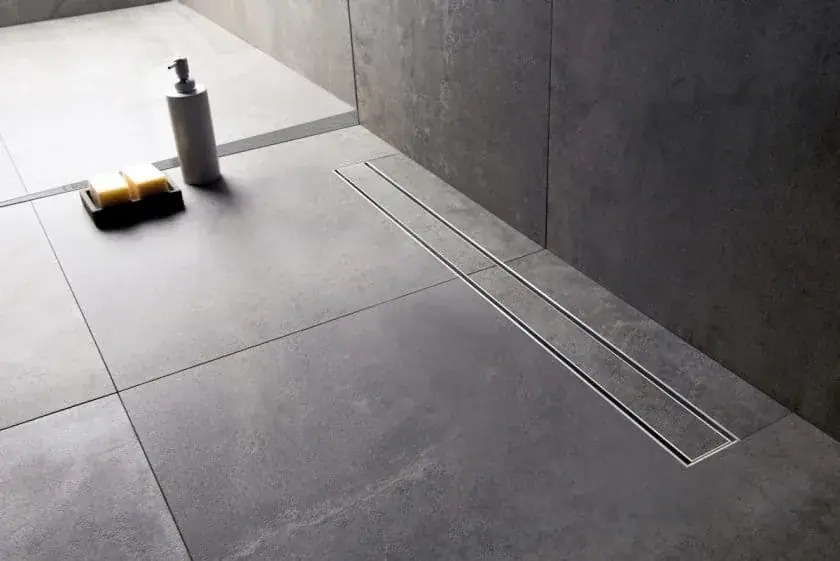
Elementos técnicosMódulo para duchas de piedra Taf - Easy Drain
Como bien debes saber, esta es una pieza clave en cualquier ducha moderna, que además de ser funcional en cuanto a uso, tacto y estanqueidad se refiere, ha de incorporar diseño para que la estética de todo el conjunto sea visualmente coherente.
Con el módulo para duchas de piedra TAF de la firma Easy Drain, la funcionalidad, la estética (con un acabado en acero), y la estanqueidad están garantizadas, y además su diseño con rejillas ajustables, permite que su adaptación al suelo sea perfecta.
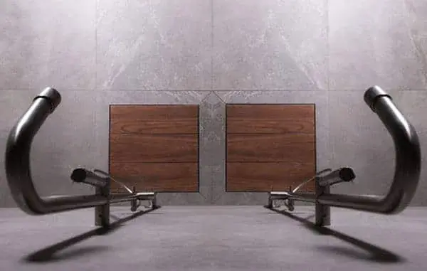
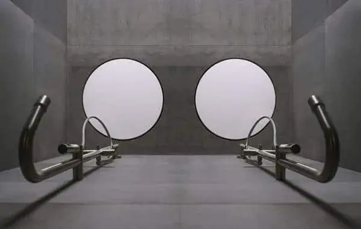
Elementos técnicosDrenaje de ducha Dot & Square - Easy Drain
Un drenaje de ducha óptimo, gracias a su tamaño y forma, si lo que quieres es tener la autonomía de poder crear una ducha moderna en la que no existan barreras. Junto a lo anterior, la conexión con giro de 360 grados, la profundidad de la rejilla, disponer de una altura de sifón orientable y ajustable, el cuál es además extraíble y fácil de limpiar, así como el hecho de que la tabla de la ducha se pueda personalizar, son características igualmente destacables.
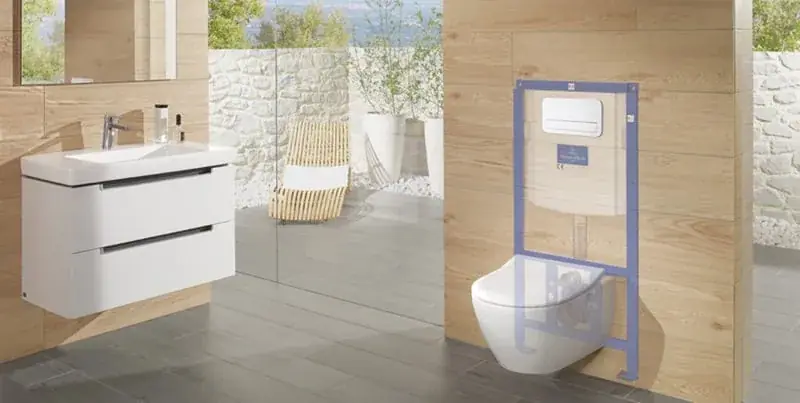
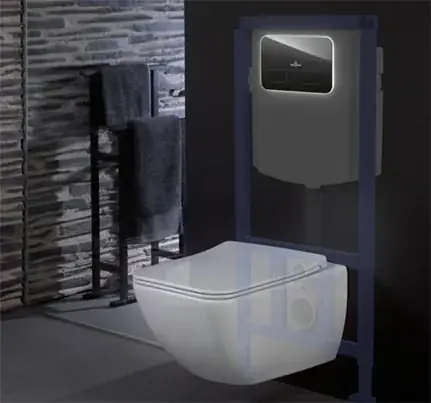
Elementos técnicosPulsadores de descarga ViConnect - Villeroy&Boch
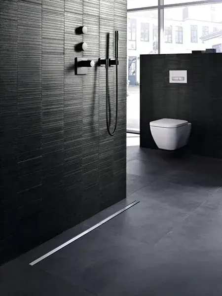
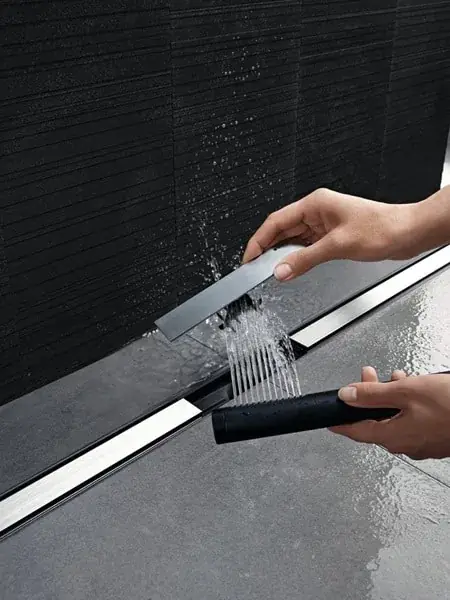
Elementos técnicosCanales de ducha y sifones para duchas de obra - Geberit
Esta nueva gama fácil de instalar y de limpiar del reconocido fabricante de sistemas para baños Giberit, se compone de un Canal de Ducha con dos variantes tanto sin como con sifón individual y extraplano de sólo 65 milímetros de altura; y tres modelos de rejilla (20, 60 y 60 extraplana) de las que puedes disponer en longitudes tanto de 90 como de 130 centímetros, y que en caso de ser necesario, puedes acortar a la medida que deseas.Por otro lado la gama dispone de un Sifón individual y extraplano (sólo 65 milímetros) para duchas de obra. Aunque este diseño ya incorpora rejilla propia, tienes también la posibilidad de elegir entre tres modelos adicionales: circle, square y estándard.
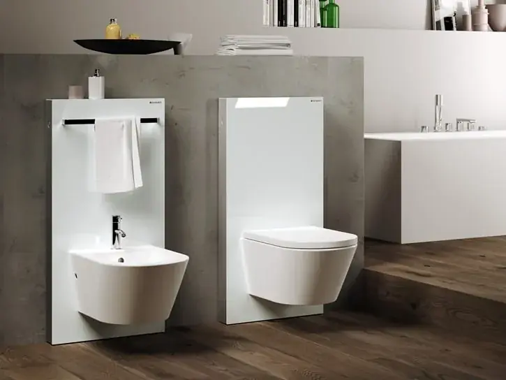
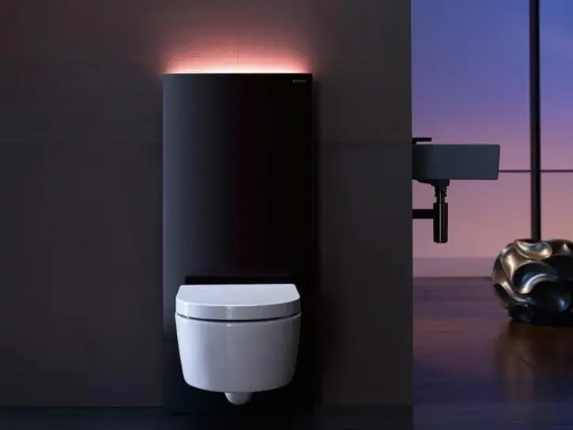
Elementos técnicosNueva cisterna vista Monolith - Geberit
Geberit nos vuelve a sorprender proponiéndonos una elegante cisterna vista para inodoros. Un producto óptimo para una instalación empotrada, en el que de forma magistral se unen la mejor tecnología hidro-sanitaria con un excelente diseño, y que ha sido galardonado con diversos premios internacionales.
Hablamos de un producto óptimo para reformas sencillas de cuartos de baño, así como para nuevas viviendas que requieren soluciones de rápida y sencilla instalación que no produzcan ni suciedad, ni ruidos ni obras de ningún tipo.
Esta nueva cisterna con increíbles ratings y premios relacionados con el consumo eficiente de agua, es compatible y adecuada para los inodoros suspendidos que ya existen en el mercado desde hace años, así como para una gran mayoría de inodoros de suelo.
- Elementos técnicos
Sifón ducha de pared - Geberit
El sifón ducha de pared Geberit para ducha de obra hace posible un baño continuo y sin interrupciones.
Elegancia, calidad demostrada y limpieza son tres palabras que definen a esta nueva ducha de pared de la firma Geberit, una solución técnicamente muy sencilla de aplicar, y con grandes ventajas tanto estéticas como funcionales para el usuario: te permite tener suelos continuos en la ducha sin interrupción alguna, evita tener que consultar con más de un operario sobre cómo instalarlo en la pared, es compatible con cualquier otra solución empotrada de esta firma, facilita la limpieza, y además lo tienes en diferentes diseños, lo que te permitirán personalizarlo en tu baño tal y cómo quieras.
- Elementos técnicos
Nuevos pulsadores para descarga Omega 20 / 30 / 60 - Geberit
Omega 20 es un nuevo pulsador con 2 botones redondos y un anillo alrededor disponible en 6 colores. Omega 30 incorpora 2 botones rectangulares con una elegante banda horizontal, también disponible en 6 colores. Omega 60 es el modelo más sofisticado de los tres ya que su superficie queda enrasada con el revestimiento de la pared evitando que sobresalga. Disponible en 4 colores, superficie de vidrio o de metal, su diseño encaja perfectamente con el resto de los accesorios del cuarto de baño.
- Elementos técnicos
Cisternas para inodoros suspendidos o al suelo Omega - Geberit
Nuevas cisternas perfectas para espacios con poca altura – bajo el alféizar de ventanas o bajo techos abuhardillados-. Ganan 3cm de espacio en el baño respecto al modelo anterior, combinan con elegantes pulsadores más pequeños, y además la instalación del pulsador y el mantenimiento de la cisterna se realizan sin herramientas.
Tienes la posibilidad de instalar el pulsador en la parte frontal o en la parte superior de la cisterna adaptándolo a tus gustos o necesidades del baño. Te permiten un mayor ahorro de agua pues su doble descarga es regulable.
- Elementos técnicos
Modulo sanitario Universal - Pozzi-Ginori
Cisterna modelo Universal, el modulo sanitario Pozzi-Ginori
Hablamos de un elemento funcional, capaz de integrarse fácilmente en diferentes ambientes del cuarto de baño, gracias al equilibrio de sus líneas y formas de su diseño, que lo hacen adaptable a diferentes opciones y preferencias en lo que a gustos se refiere.
Lo puedes adaptar no sólo a nuevas edificaciones, sino también en reformas de cuartos de baño. Entre otros aspectos técnicos, destaca por su fácil instalación.
El módulo universal, elegante y a la vez sosfisticado, lo puedes combinar con inodoros de diversas colecciones de Pozzi-Ginori, tales como 9.15, citterio y fast. Dispoble en versión tanto de pie como en suspendido.